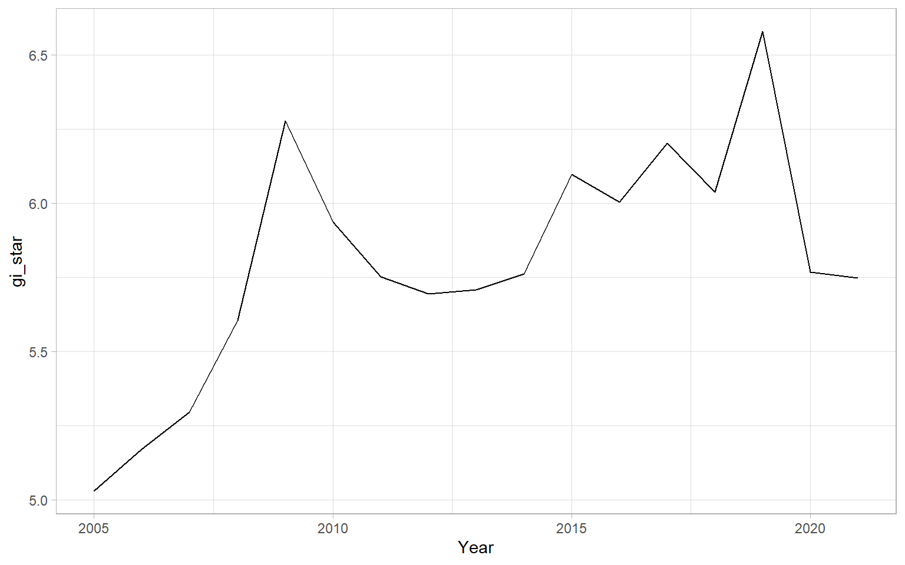
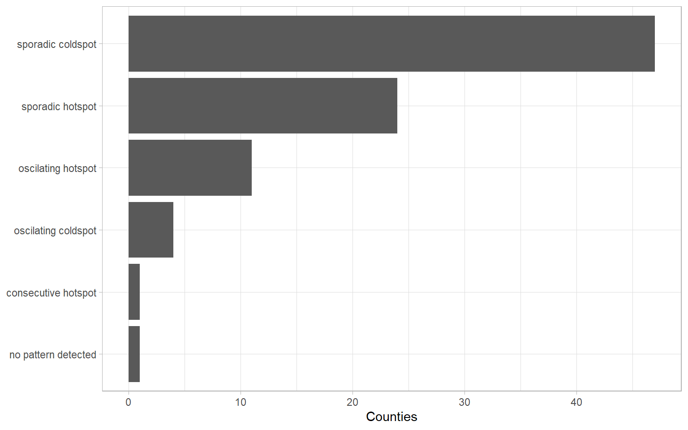
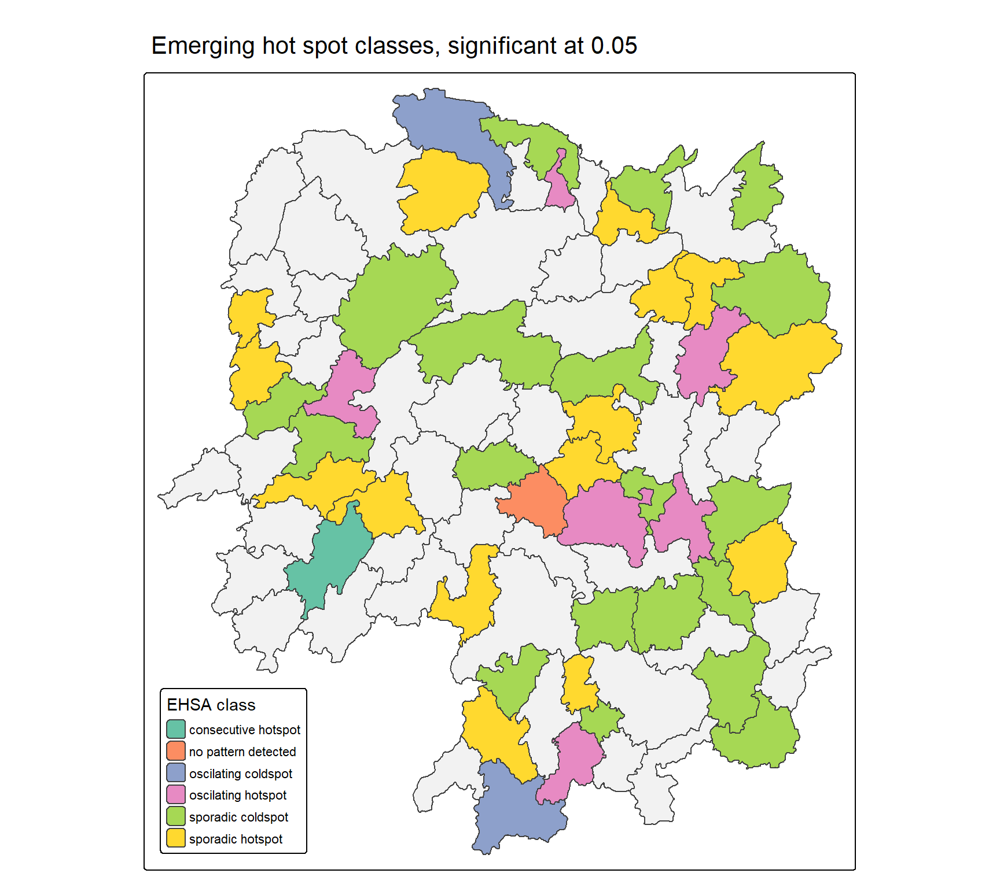

pacman::p_load(sf, sfdep, tmap,
plotly, tidyverse,
Kendall)In-class Exercise 6: Emerging Hot Spot Analysis
Overview
Hands-on Exercise 5a and 5b worked through the measures of spatial association on one year of Hunan data: global Moran’s I and Geary’s C, their permutation tests, local Moran’s I, the LISA cluster map, and hot and cold spot analysis with Getis-Ord Gi*. All of that is assumed here and none of it is repeated.
What those exercises could not answer is whether a hot spot is new. Gi* computed on GDPPC in 2012 says that the north-east of the province was a significant concentration of wealth that year. It says nothing about whether the concentration had been there since 2005, had been building steadily, or had just appeared. A planner deciding where to intervene needs that distinction, because a long-standing hot spot and an emerging one call for different responses.
Emerging Hot Spot Analysis supplies it by running the Gi* machinery over a panel instead of a cross-section, and then testing each location’s Gi* time series for trend. The method has four steps:
- build a space-time cube, which is the panel with its geometry attached,
- compute Gi* for every location in every time period,
- test each location’s sequence of Gi* values for monotonic trend with the Mann-Kendall test, and
- classify each location by combining the trend result with the pattern of significant bins over time.
This exercise follows all four on seventeen years of Hunan GDPPC, first by hand so that the pieces are visible, and then through emerging_hotspot_analysis() of sfdep, which does the whole thing in one call. The two routes turn out not to agree, and the last section is about why.
Getting Started
Six packages are used:
| Package | Role |
|---|---|
| sf | Importing and reprojecting the boundary layer |
| sfdep | The space-time cube, the Gi* statistic and the one-call EHSA |
| tmap | Mapping the classification |
| plotly | Making the single-county trend plot readable by hover |
| tidyverse | Data import and wrangling |
| Kendall | The Mann-Kendall trend test |
spdep does not appear, for the same reason as in Exercise 5b: sfdep wraps it and returns results as list columns in a data frame, which is what makes a per-year group_by() possible below. Kendall is the one genuinely new dependency, and it supplies a single function.
The Data
| Dataset | Description |
|---|---|
Hunan |
County boundary layer of Hunan province, China, in ESRI shapefile format |
Hunan_GDPPC.csv |
GDP per capita by county and year, 2005 to 2021 |
The boundary layer is the one carried through Exercises 4 and 5. The attribute table is new, and the difference is the whole point: Hunan_2012.csv held one value per county, while this file holds seventeen.
Importing geospatial data
hunan <- st_read(dsn = "data/geospatial",
layer = "Hunan") %>%
st_transform(crs = 32650)Reading layer `Hunan' from data source
`C:\Users\Imgigi\Desktop\629\in-class-ex\in-class-ex6\data\geospatial'
using driver `ESRI Shapefile'
Simple feature collection with 88 features and 7 fields
Geometry type: POLYGON
Dimension: XY
Bounding box: xmin: 108.7831 ymin: 24.6342 xmax: 114.2544 ymax: 30.12812
Geodetic CRS: WGS 8488 counties, reprojected to EPSG 32650, WGS 84 / UTM zone 50N. Exercise 5a deliberately left the layer in geographic coordinates because contiguity does not depend on the coordinate system. Here it must be projected, because the weights built below are inverse distance weights and a distance computed from degrees of latitude and longitude is not a distance.
Importing attribute table
GDPPC <- read_csv("data/aspatial/Hunan_GDPPC.csv")glimpse(GDPPC)Rows: 1,496
Columns: 3
$ Year <dbl> 2005, 2005, 2005, 2005, 2005, 2005, 2005, 2005, 2005, 2005, 200…
$ County <chr> "Longshan", "Changsha", "Wangcheng", "Ningxiang", "Liuyang", "Z…
$ GDPPC <dbl> 3469, 24612, 14659, 11687, 13406, 8546, 10944, 8040, 7383, 1168…Three columns and 1,496 rows: 88 counties by 17 years, with no gaps. The panel is balanced, which the next step requires.
summary(GDPPC$GDPPC) Min. 1st Qu. Median Mean 3rd Qu. Max.
3315 11895 20941 26705 34163 155564 GDPPC runs from 3,315 to 155,564 yuan across the whole panel. The provincial median rose from 7,308 in 2005 to 43,227 in 2021, a factor of 5.9, and Changsha is the richest county in both years at 24,612 and 144,309. That province-wide growth is exactly why the analysis runs on Gi* rather than on GDPPC itself. Every county’s GDPPC trends upward, so a trend test on the raw values would find a significant increase almost everywhere and say nothing. Gi* is a relative measure, standardised against the whole study area in each year, so a rising Gi* means a county is pulling ahead of the province rather than merely growing.
Creating a Time Series Cube
spacetime() of sfdep binds the attribute panel to the geometry, keeping them as two linked contexts rather than joining them into one wide table:
GDPPC_st <- spacetime(GDPPC, hunan,
.loc_col = "County",
.time_col = "Year")is_spacetime_cube(GDPPC_st)[1] TRUETRUE confirms the object is a true cube. The check is not a formality: a cube requires every location to appear in every time period, so one county missing one year would make the object fail here. The practical reason it matters is that Gi* is computed within each year against all the other counties in that year, and a missing county would silently change the comparison set for that year only.
The object has two contexts, "data" and "geometry", and activate() chooses which one a verb applies to. The geometry context holds 88 rows, one per county, while the data context holds all 1,496.
Computing Gi*
Deriving the spatial weights
The neighbours and weights are built once, on the geometry context, and then apply to every year:
GDPPC_nb <- GDPPC_st %>%
activate("geometry") %>%
mutate(nb = include_self(
st_contiguity(geometry)),
wt = st_inverse_distance(nb,
geometry,
scale = 1,
alpha = 1),
.before = 1) %>%
set_nbs("nb") %>%
set_wts("wt")Two details carry real weight. include_self() is what makes the statistic Gi* rather than Gi: Gi measures the concentration in a county’s neighbourhood excluding itself, while Gi* includes the county, which is what is wanted when asking whether a place and its surroundings together form a hot spot. Adding self raises the average neighbourhood from 5.09 counties to 6.09, ranging from 2 to 12.
st_inverse_distance() then replaces the binary contiguity with weights that decay as 1/d, so an adjacent county whose centroid is close counts for more than one that is adjacent but distant. This differs from Exercise 5b, where the Gi* used a fixed distance band with equal weights inside it.
set_nbs() and set_wts() register the two columns with the cube so that the data context can see them. A plain mutate() would attach them to the geometry context only, and the grouped computation below would not find them.
Computing Gi* for every county and year
set.seed(1234)
gi_stars <- GDPPC_nb %>%
group_by(Year) %>%
mutate(gi_star = local_gstar_perm(
GDPPC, nb, wt)) %>%
tidyr::unnest(gi_star)write_rds(gi_stars, "data/rds/gi_stars.rds")
gi_stars <- read_rds("data/rds/gi_stars.rds")group_by(Year) is doing the work. Without it, local_gstar_perm() would treat all 1,496 rows as one spatial dataset and standardise a county’s 2005 value against every other county in every other year, which would turn the whole exercise into a measure of how early the observation was taken. With it, each year is standardised against itself, and the result is 1,496 Gi* values that are comparable across years by construction.
The seed is set because local_gstar_perm() draws permutations. Only the simulated p-values depend on it, since the Gi* values themselves are deterministic, but a seeded document is a reproducible one.
Gi* over the whole panel runs from -2.888 to 6.579.
Mann-Kendall Test
The Mann-Kendall test asks whether a series is monotonically increasing or decreasing. It compares every pair of observations and counts how many pairs rise with time against how many fall, so it is a rank test: it cares about direction, not magnitude, and it assumes nothing about the distribution of the values. That suits a Gi* series, which is not normal and has no reason to be linear.
One county first
cbg <- gi_stars %>%
ungroup() %>%
filter(County == "Changsha") |>
select(County, Year, gi_star)ggplot(data = cbg,
aes(x = Year,
y = gi_star)) +
geom_line() +
theme_light()
Changsha’s Gi* starts at 5.03 in 2005 and ends at 5.75 in 2021, peaking at 6.58 in 2019. It is a strong hot spot throughout, which is no surprise for the provincial capital, and the question the test answers is whether it is getting more so.
An interactive version makes the individual years readable, which a static line at this scale does not:
p <- ggplot(data = cbg,
aes(x = Year,
y = gi_star)) +
geom_line() +
theme_light()
ggplotly(p)cbg %>%
summarise(mk = list(
unclass(
Kendall::MannKendall(gi_star)))) %>%
tidyr::unnest_wider(mk)# A tibble: 1 × 5
tau sl S D varS
<dbl> <dbl> <dbl> <dbl> <dbl>
1 0.485 0.00742 66 136. 589.Kendall’s tau is 0.485 with a p-value of 0.0074, so the upward trend is significant at the 0.05 level. The other three columns are the internals: S is 66, the excess of rising pairs over falling ones, out of D = 136 comparable pairs, and varS is the variance of S under the null of no trend. A tau of 0.485 means roughly three quarters of the year pairs rise.
The substantive reading is that Changsha was already the strongest hot spot in the province in 2005 and became stronger still. Provincial growth has not been evenly shared.
Every county at once
The same summary, grouped:
ehsa_mk <- gi_stars %>%
group_by(County) %>%
summarise(mk = list(
unclass(
Kendall::MannKendall(gi_star)))) %>%
tidyr::unnest_wider(mk)
head(ehsa_mk)# A tibble: 6 × 6
County tau sl S D varS
<chr> <dbl> <dbl> <dbl> <dbl> <dbl>
1 Anhua 0.191 0.303 26 136. 589.
2 Anren -0.294 0.108 -40 136. 589.
3 Anxiang 0 1 0 136. 589.
4 Baojing -0.691 0.000128 -94 136. 589.
5 Chaling -0.0882 0.650 -12 136. 589.
6 Changning -0.750 0.0000318 -102 136. 589.ehsa_mk %>%
summarise(n = n(),
significant = sum(sl < 0.05),
rising = sum(sl < 0.05 & tau > 0),
falling = sum(sl < 0.05 & tau < 0))# A tibble: 1 × 4
n significant rising falling
<int> <int> <int> <int>
1 88 42 20 2242 of the 88 counties show a significant trend in their Gi*, 20 upward and 22 downward. The near balance is what a relative measure forces: Gi* is standardised within each year, so a county can only gain relative standing if others lose it. The province is polarising rather than converging, and the test locates both ends of that movement.
emerging <- ehsa_mk %>%
arrange(sl, abs(tau)) %>%
slice(1:10)
emerging# A tibble: 10 × 6
County tau sl S D varS
<chr> <dbl> <dbl> <dbl> <dbl> <dbl>
1 Shuangfeng 0.868 0.00000143 118 136. 589.
2 Xiangtan 0.868 0.00000143 118 136. 589.
3 Xiangxiang 0.868 0.00000143 118 136. 589.
4 Chengbu -0.824 0.00000482 -112 136. 589.
5 Dongan -0.824 0.00000482 -112 136. 589.
6 Wugang -0.809 0.00000712 -110 136. 589.
7 Huayuan -0.794 0.0000105 -108 136. 589.
8 Shaoshan 0.794 0.0000105 108 136. 589.
9 Liuyang 0.779 0.0000153 106 136. 589.
10 Zhuzhou 0.765 0.0000221 104 136. 589.
NoteThis slice is not a list of emerging hot spots
The object is conventionally named emerging, and the sort does not produce what the name suggests. arrange(sl, abs(tau)) orders by p-value ascending, so it returns the ten strongest trends, and strength here is signed in both directions. Six of these ten are rising, Shuangfeng, Xiangtan, Xiangxiang, Shaoshan, Liuyang and Zhuzhou, and four are falling, Chengbu, Dongan, Wugang and Huayuan. Reading the table as a shortlist of emerging hot spots would put four counties with sharply declining relative standing at the top of it.
A second point applies to the 42 counties above as well. Eighty-eight Mann-Kendall tests are run and none of the p-values is adjusted, so at a 0.05 threshold roughly four significant results are expected by chance alone. The classification produced by emerging_hotspot_analysis() below does apply a correction internally, which is one of several reasons the two sets of results do not line up.
Performing Emerging Hotspot Analysis
Everything above is packaged into one function:
set.seed(1234)
ehsa <- emerging_hotspot_analysis(
x = GDPPC_st,
.var = "GDPPC",
k = 1,
nsim = 99
)write_rds(ehsa, "data/rds/ehsa.rds")
ehsa <- read_rds("data/rds/ehsa.rds")k = 1 is the number of time lags included in each bin’s neighbourhood, so with k = 1 a county’s 2012 neighbourhood contains its neighbours in 2012 and in 2011. nsim = 99 sets the permutations behind the p-value. The seed is set for the same reason as before.
Visualising the distribution of EHSA classes
ggplot(data = ehsa,
aes(y = fct_rev(fct_infreq(classification)))) +
geom_bar() +
labs(x = "Counties", y = NULL) +
theme_light()
ehsa %>%
count(classification, sort = TRUE)# A tibble: 6 × 2
classification n
<chr> <int>
1 sporadic coldspot 47
2 sporadic hotspot 24
3 oscilating hotspot 11
4 oscilating coldspot 4
5 consecutive hotspot 1
6 no pattern detected 1Six classes appear. sporadic coldspot takes 47 of the 88 counties and sporadic hotspot 24, so 71 counties are classified as on-again, off-again. Only one county, Suining, is a consecutive hotspot, and 15 are oscillating, meaning they have been significant in both directions at different times. The class names are spelled oscilating in the output, with one l, and that is sfdep’s spelling rather than a transcription slip.
The dominance of the sporadic classes is informative rather than disappointing. Seventeen years is long enough for a county’s relative position to drift in and out of significance, and a class that requires an unbroken run is correspondingly hard to earn.
Visualising EHSA
The classification is joined back to the geometry, and only the significant counties are coloured:
hunan_ehsa <- hunan %>%
left_join(ehsa,
by = join_by(County == location))ehsa_sig <- hunan_ehsa %>%
filter(p_value < 0.05)
tm_shape(hunan_ehsa) +
tm_polygons(fill = "grey95") +
tm_borders(fill_alpha = 0.5) +
tm_shape(ehsa_sig) +
tm_polygons(fill = "classification",
fill.scale = tm_scale_categorical(
values = "brewer.set2"),
fill.legend = tm_legend(
title = "EHSA class",
position = tm_pos_in("left", "bottom"))) +
tm_borders(fill_alpha = 0.4) +
tm_title("Emerging hot spot classes, significant at 0.05")
Two tm_shape() calls are stacked deliberately. The first draws all 88 counties in pale grey so the province keeps its shape, and the second overpaints only the 44 counties whose trend is significant. Filtering before mapping rather than mapping all 88 and relying on transparency is what keeps the insignificant counties from reading as a class of their own.
44 of the 88 counties are significant: 19 sporadic cold spots, 15 sporadic hot spots, 6 oscillating hot spots, 2 oscillating cold spots, the single consecutive hot spot, and one county classed no pattern detected whose trend is nonetheless significant.
Interpretation of the classes
The classes answer a different question from the trend test, and the difference is worth stating plainly:
| Class | Meaning |
|---|---|
consecutive hotspot |
An unbroken run of significant hot spot periods at the end of the series, never a significant cold spot |
sporadic hotspot |
On-again, off-again hot spot, never a significant cold spot |
oscilating hotspot |
A recent hot spot that was a significant cold spot at some earlier point |
sporadic coldspot |
On-again, off-again cold spot, never a significant hot spot |
oscilating coldspot |
A recent cold spot that was a significant hot spot earlier |
no pattern detected |
The trend test does not place the location in any of the above |
A class describes the history of significance, and tau describes the direction of movement. The two can disagree without either being wrong. Hengshan is a sporadic coldspot with tau of +0.53: it has spent the period as an intermittently significant cold spot while steadily closing the gap. That combination, a poor neighbourhood catching up, is invisible to the single-year Gi* map of Exercise 5b and is arguably the most useful thing the method produces.
The two routes do not give the same answer
The exercise computed Mann-Kendall by hand and then called a function that computes Mann-Kendall, and the natural assumption is that the second confirms the first. It does not.
comparison <- ehsa %>%
as_tibble() %>%
select(location, classification, ehsa_tau = tau, p_value) %>%
left_join(ehsa_mk %>% select(location = County, manual_tau = tau),
by = "location")
comparison %>%
summarise(n = n(),
correlation = round(cor(ehsa_tau, manual_tau), 3),
same_sign = round(mean(sign(ehsa_tau) == sign(manual_tau)), 3))# A tibble: 1 × 3
n correlation same_sign
<int> <dbl> <dbl>
1 88 -0.056 0.455The two tau columns are uncorrelated, and they agree on the direction of the trend for fewer than half the counties. Individual cases are stark:
comparison %>%
filter(location %in% c("Changsha", "Shuangfeng", "Nan", "Li")) %>%
select(location, manual_tau, ehsa_tau, classification)# A tibble: 4 × 4
location manual_tau ehsa_tau classification
<chr> <dbl> <dbl> <chr>
1 Li 0.0294 -0.824 sporadic coldspot
2 Shuangfeng 0.868 -0.471 sporadic hotspot
3 Nan -0.0147 0.912 sporadic hotspot
4 Changsha 0.485 0.779 oscilating hotspotShuangfeng has the joint strongest rising trend in the manual table at +0.87 and the function reports -0.47 for it. Nan is flat by hand at -0.01 and +0.91 by the function.
WarningIt is a different statistic, not a bookkeeping error
The obvious suspicion is that the rows have been lined up wrongly, because ehsa is ordered as the boundary layer is while ehsa_mk is alphabetical. That was checked and ruled out. The join above is by county name, not by position, and the two sets of tau values are not even the same numbers in a different order: sorting both vectors and comparing them gives no match, and re-ordering the manual table into the order the source CSV uses agrees with the function on 2 counties out of 88.
What the comparison does show is that the function’s tau moves with k, the time-lag parameter, which the manual computation has no equivalent of:
| k = 1 | k = 2 | k = 3 | k = 4 | |
|---|---|---|---|---|
correlation with the k = 1 result |
1.000 | 0.973 | 0.946 | 0.920 |
| correlation with the manual tau | -0.056 | -0.060 | -0.039 | -0.028 |
| counties significant at 0.05 | 44 | 34 | 31 | 33 |
The function’s tau is highly stable against a change in k and completely unrelated to the hand computation at every value of it. That is the signature of a statistic computed on a different series: emerging_hotspot_analysis() builds each bin’s neighbourhood in space and time, pooling the current period with the previous k, so the Gi* series it tests is not the per-year Gi* series built above. Changing k also moves 19 of the 88 classifications between k = 1 and k = 2.
The practical conclusion is that the manual walkthrough explains the idea of EHSA and does not reproduce the output of the function. The step-by-step version is worth doing because it makes the space-time cube, the per-year Gi*, and the trend test concrete, but the numbers it yields should not be reported alongside the classification as though they were two views of one result. If the classification is what is being used, k is a modelling choice that has to be stated, and the default of 1 is a choice like any other.
Reference
- Kam, T. S. R for Geospatial Data Science and Analytics, Chapter 11: Emerging Hot Spot Analysis.
- Understanding Emerging Hotspots, the sfdep article that defines the classification used above.
emerging_hotspot_analysisandspacetimein the sfdep reference.- Mann, H. B. (1945) “Nonparametric Tests Against Trend”, Econometrica, 13(3): 245-259.
- Kendall, M. G. (1975) Rank Correlation Methods, 4th edition, Charles Griffin, London.
- Getis, A. and Ord, J. K. (1992) “The Analysis of Spatial Association by Use of Distance Statistics”, Geographical Analysis, Vol. 24, No. 3, pp. 189-206.